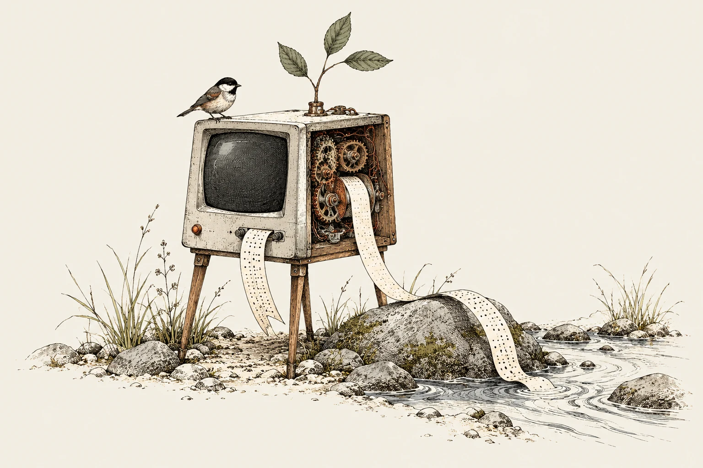
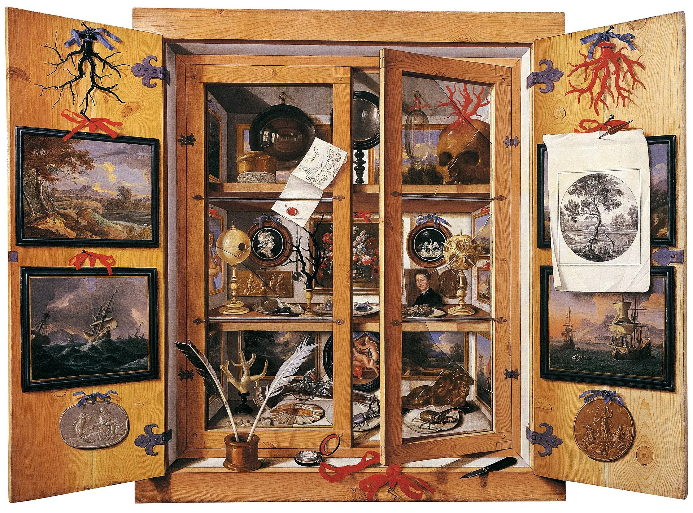

Opening excerpt · reading layout preview
Continue reading on Still BrookStill Brook.

From the cabinet
11 Jul 2026
8 min read
The cabinet of
impossible machines
Five languages. Five very different ideas about what a program can be.
Read the essay
Domenico Remps · Public domainPages from the notebook
A selection of six essays
No essays found. Try another word.
Show all essays →A note in the margin
A little curiosity goes a long way.
Still Brook is an independent journal about software, systems, and the quiet decisions that shape what we make.
Visit the current journal